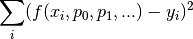

Data fitting¶
The scipy.optimize module contains function that can be used to perform data fitting.
The easiest function to use is the curve_fit function. Below is the documentation of the function.
curve_fit¶
Use non-linear least squares to fit a function, f, to data.
Assumes ydata = f(xdata, *params) + eps
Parameters¶
- f : callable
- The model function, f(x, …). It must take the independent variable as the first argument and the parameters to fit as separate remaining arguments.
- xdata : An N-length sequence or an (k,N)-shaped array
- for functions with k predictors. The independent variable where the data is measured.
- ydata : N-length sequence
- The dependent data — nominally f(xdata, …)
- p0 : None, scalar, or M-length sequence
- Initial guess for the parameters. If None, then the initial values will all be 1 (if the number of parameters for the function can be determined using introspection, otherwise a ValueError is raised).
- sigma : None or N-length sequence
- If not None, it represents the standard-deviation of ydata. This vector, if given, will be used as weights in the least-squares problem.
Returns¶
- popt : array
- Optimal values for the parameters so that the sum of the squared error
of
f(xdata, *popt) - ydatais minimized - pcov : 2d array
- The estimated covariance of popt. The diagonals provide the variance of the parameter estimate.
Notes¶
The algorithm uses the Levenburg-Marquardt algorithm: scipy.optimize.leastsq. Additional keyword arguments are passed directly to that algorithm.
Examples¶
>>> import numpy as np
>>> from scipy.optimize import curve_fit
>>> def func(x, a, b, c):
... return a*np.exp(-b*x) + c
>>> x = np.linspace(0,4,50)
>>> y = func(x, 2.5, 1.3, 0.5)
>>> yn = y + 0.2*np.random.normal(size=len(x))
>>> popt, pcov = curve_fit(func, x, yn)
Fitting image¶
The curve_fit function described above is used to minimize the following :

Indeed, it assumes that f(x[i], ...) = f(x, ...)[i] and uses the second method. Therefore,
as long as the function func returns a 1D array, the curve_fit will return the optimal parameters that minimize the sum. The parameter x does not have to be a 1D array.
In order to fit pictures (2D array), one has to flatten the image array and creates the corresponding x and y coordinate. This can be done using the following code :
# image is a 2D array
ny, nx = image.shape
X,Y = meshgrid(range(nx), range(ny))
# two column matrices with X and Y
XY = array([X.flatten(), Y.flatten()]).transpose()
The XY array can be passed as the first parameter of the fit function. The fit function should then extract the corresponding x and y coordinates. For example :
def gauss(XY, amplitude, center_x, center_y, diameter):
x = XY[:,0]
y = XY[:,1]
return amplitude*exp(-((x-center_x)**2 + (y-center_y))/diameter**2)
popt, pcov = curve_fit(gauss, XY, image.flatten(), p0)
Note also that, because we have flattened the 2D array, you can select the points for your fit without keeping a matrix like structure. The following example will perform the fit only for points in the image with a positive intensity.
fimage = image.flatten()
condition = fimage>0
popt, pcov = curve_fit(gauss, XY[condition, :], fimage[condition], p0)